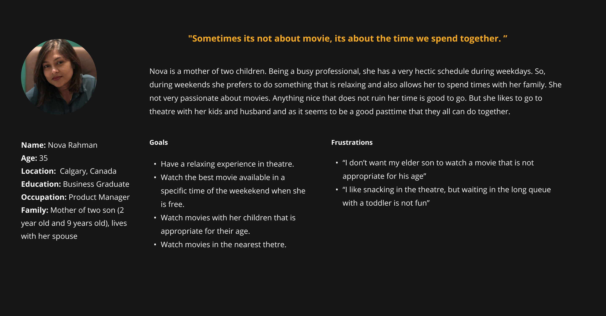

Persona
From the user research, I identified two persona.


I moved to Calgary in November 2021. To recover from winter boredom and from the fear of missing out the latest Marvel craze, I went to a theatre of Landmark Cinemas (second largest cinema chain in Canada after Cineplex) to watch Eternals. Being a person who likes to plan everything ahead, I reserved my tickets online from it’s website. Though the expereince of the theatre was good, I didn’t found the experience of using the website very pleasant as a user. As a designer, I saw many flaws and usability issues as well. In consequence, to soothe my designer soul and as a part of my second portfolio project in Googles UX Design Certification, I decided the redesign the website.
User Interview, Usability Test, Contextual Inquiry, Heuristic Evaluation, Synthesis, Ideation, Testing, Mockup, Interactive Prototype
November-December, 2021
Individual
Adobe XD, Miro, Zoom
Screenshots takes during contextual research. Participant is buying movie tickets from Landmark's website.
From the user research, I identified two persona.
1. Selecting Theatre in the Begining
From the user research, I identified two main user stories of movie-goers. For an example, first is for the people who are looking for a good time to watch the new Justice League movie (they have a specific movie in mind). Second is the people who are looking for a nice movie to watch during Saturday afternoon (they have a specific time in mind). But, the current userflow does not serve this user stories properly because it starts with selecting a particular theatre at first. Research indicates that user selects a particular theater depending on it's location, convenient screen time and avaialbility of favorite movie. Their mental model is more like "Lets see when I can watch Spider Man" or "Lets see what movie I can watch on Saturday Evening" but not like "Lets see what movie is available in Calgary Country Hill Theatre". So, selecting a particular theatre as a early step doesn't match with their mental model. This analysis indicated that the user flow of current website needs to be rearranged.
2. Selecting Seats
During the usability study, a major of the frustrations came from the fact that user finally choose the right screening time and movie for them, only to realize there are no relevant available seats of their choice. This painpoint gave me a hint that user should get the idea of seat arangement in a earlier step of user flow.

3. Clumpsy UI Design
During the usability study, users found the design very clumpsy and performaing the basic use cases was not quite intuitive for them. From the heuristics analysis, I realized the website lacks visual hierarchy and hence fails to guide users follow the content. Also, I saw there are oceans of content which made me reliaze that the information should be reorganized for designing a better layout.
Current User Interface of Landmark's Website
During the usability test and contextual inquiry, I saw participants struggling with the navigation. So, I decided to dig down the current user flow of the website.
For desigining a better UI layout, I wanted to see if the content of the existing website can be better organized. So, I decided to dig down the existing information structure of the website.
During the ideation phase, I also looked into others competitor's website such as Cineplex and Atom Tickets to get more ideas. Gathering all the insights from the foundational research and design research, I started designing the screens of Landmark's website using pen and paper. Then I trasnferred the paper wireframe to digital wireframe using Adobe XD.

After transferring the paper wireframe to digital wireframe, I applied the icons, colors, typography and containment, and came up with the hi-fidelity prototype. I wanted to see if my solution works well. So I shared the prototype with one of my friend and ask him to explain the UI and perform a use case where he buys the movie ticket of "Dune". The testing did not unveil any more insights but my friend was able to perform the use case and explain well whats happening in the UI. That means the design was not complicated.

Redesigning Landmark's website was a great satisfaction as this is one website I regularly use for reserving movie tickets. Also, in my design career, I have mostly used Figma, Sketch and Invision for making wireframe, mockups and interactive prototype. This is the first time when I have used Adobe XD as a design tool. Trying a new tool definitely inreased my adaptibility and strengthen my opinion towards the features of each of them. As this was the MVP for my project, I designed only the desktop version of the website. In next iteration, I would like to design the website for smaller screen sizes.